自《波段市场分析报告》上线以来，最有趣的现象不是市场涨跌，而是某些付费群主和“投资大师”的集体焦虑。我们后台几乎每天都会收到各种谩骂、嘲讽、投诉，评论区也充斥着各种 “跟着你们投资亏得倾家荡产”的“网友留言”。谢谢你们如此卖力，辛苦了。
我们深知各位老师的生活不易，因此我们决定：《波段市场分析报告》继续长期向、免费向中国读者开放。同时，本基金部分研究报告也将陆续免费分享给广大投资者。
当越来越多的人能够直接看到数据、逻辑和推演过程时，那些依靠神秘感包装观点、依靠话术制造权威的人，自然就没那么容易装神弄鬼了。
不要再问我们有没有付费会员了，这个真没有。
6月3日发布的标普 500（SPX）30 分钟图：
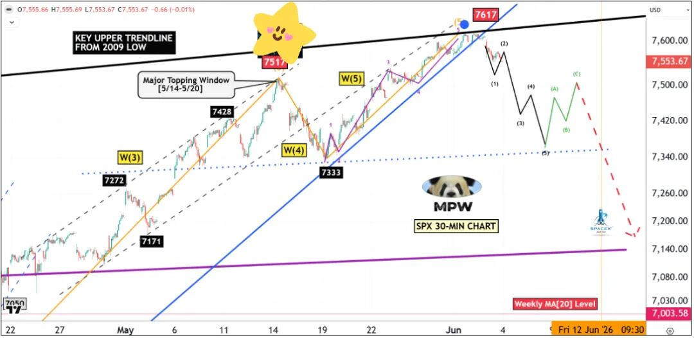
6 月 3 日发布的标普 30 分钟图，标注 W（3）/W（4）/W（5）推动浪、"5/14—5/20 重大见顶窗口"，并以红色虚线勾勒后续崩跌路径
下图为更新后的标普 500 30 分钟图：
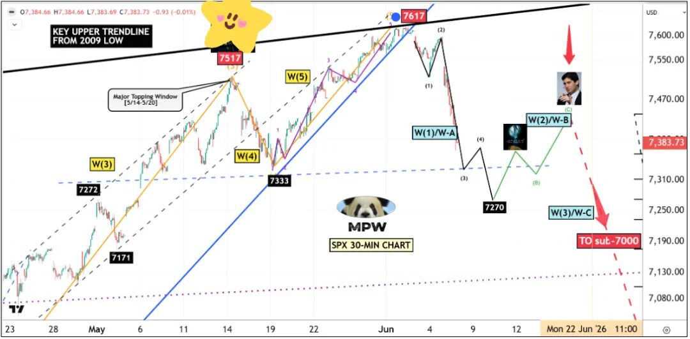
更新版 30 分钟图，7617 见顶后展开 W（1）/W-A、W（2）/W-B、W（3）/W-C 杀跌结构，目标直指"7000 点下方"
巨熊咆哮归位
（1）6 月 1 日的"蓝月"毫不犹豫、毫不留情地唤醒了那头蛰伏已久、嗜血的巨熊。它沉睡太久——如今，终于轮到大熊登场。
（2）长期牛市天花板再度显灵，硬生生终结了标普 500 这波 1300 点的涨势——周五那记"不留活口"的瀑布式杀跌，让整整一群抄底客措手不及。他们的苦旅才刚刚开始。
（3）黑色五浪推动结构目标直指 7270—7290 区域，即下方最后一个重要跳空缺口。在一轮反弹 W（2）/W-B 之后，真正的崩盘将于 6 月 17 日 FOMC 会议后启动。
发生了什么？
在 6 月 3 日发布的周中更新中，我曾这样写道：
伴随 6 月 1 日凌晨那轮罕见的"蓝月"，大盘亢奋情绪达到高潮，精准触及黑色长期天花板线。（2）在跌破蓝色支撑趋势线之后，终于轮到熊方向下方展示什么叫"惊喜"了。
未来数周的几起催化事件，将对当前的 AI 狂热投下重大疑云；除了海湾地区持续的冲突之外，卷土重来的通胀数据（6 月中旬的 CPI/PPI）、6 月 17 日的 FOMC 会议、6 月 12 日的 SpaceX IPO 等，都可能驯服多头。
我未曾料到，周五盘前一份亮眼的就业报告竟会击垮市场——然而，一根唤醒这头凶悍巨熊的大阴线，早已是迟到太久。
市场一旦准备好下跌，总能找到借口暴跌；正如它准备好上涨时，也总能找到任何理由拉升。
为更好理解过去几周所发生的一切，我们来对比以下两张标普 500 成分股热力图——第一张为周线（近一周）图，第二张为月线（近一月）图。
尽管科技板块以及计算机软硬件板块在过去一周遭到重创，但它们的月度表现依然飘绿（即月度仍录得上涨）。
下跌空间仍然充足。
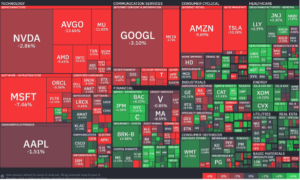
标普成分股近一周热力图，满盘尽墨，AVGO 单周重挫 -13.66%、MU -11.02%、MSFT -7.46%
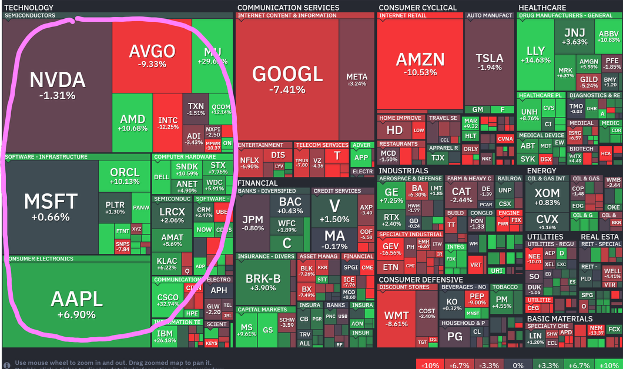
标普成分股近一月热力图，科技板块（粉圈标注）月度仍为绿色，AAPL +6.90%、MSFT +0.66%，预示后续仍有补跌空间
接下来会怎样？
在我的判断与交易模型中，毫无疑问：一轮重大回调阶段已经启动，跌幅最低 8%，最可能达到 10%，于 6 月底前下探至 7000 点下方。转折点被往后推迟了一两周；但延迟越久，反向运动便越凌厉。
6 月 12 日的 SpaceX IPO，以及美联储主席沃什（Walsh）主持的首次 FOMC 会议，将成为又一轮杀跌的关键催化剂。鉴于此前抛物线行情那种历史级、一边倒的动能，下一阶段的下跌同样将令人难忘。
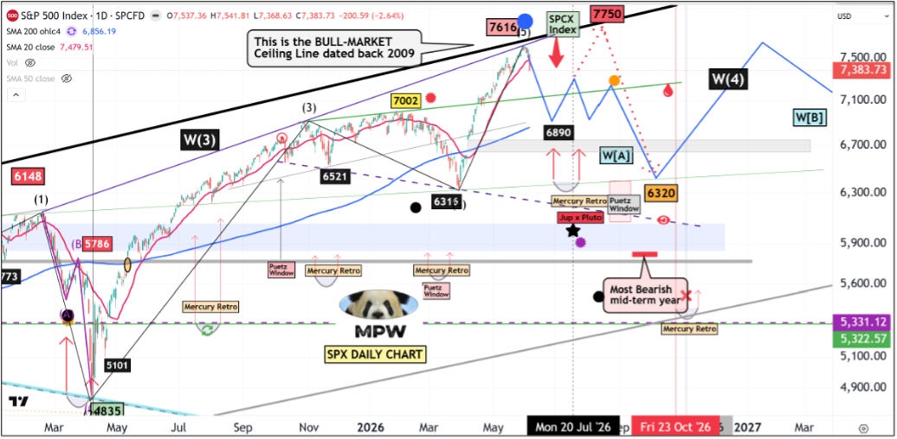
标普日线全景路线图，黑色"2009 年以来的牛市天花板线"在 7616 处构筑五浪顶，后市推演 W（4）、W[A]/W[B] 调整，并标注水星逆行、Puetz Window、"中期最熊年份"等时间窗
对于那些仍把当前下跌视为普通回调的交易者，请特别留意这张 $NYMO 的格局
这一持续已久的大幅背离已酝酿数月，而一轮重大回调将在 -90 附近见底——见图中标记。前路漫漫。
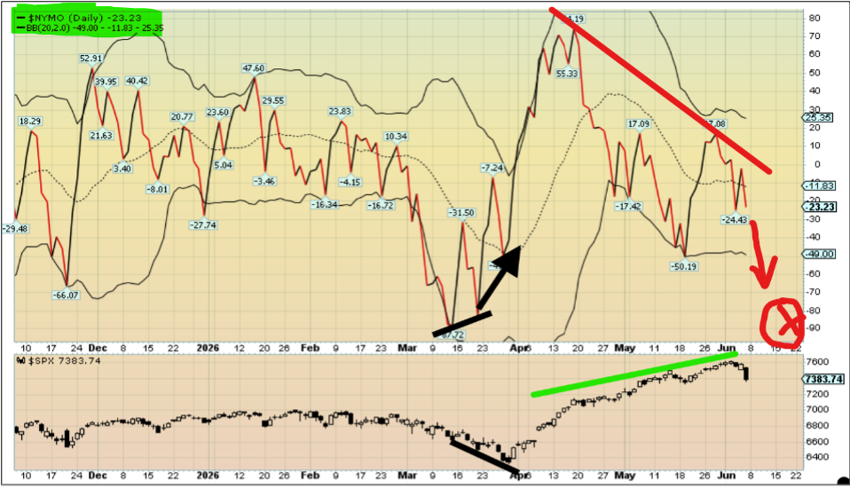
$NYMO（麦克莱伦累积指标）日线图，与底部标普价格（绿线上行）形成长期顶背离，红色箭头指向 -90 附近的目标见底区
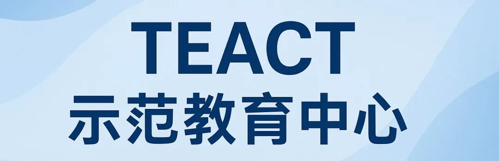
抛物线顶之后的余波
在我所有的指标当中，时间（择时）确实是最难以捉摸的变量。背离可以持续数周，指标可以超买数月，多头看似不可战胜。然后，便是泡沫那触目惊心的破裂。从这一刻起，那些仍死守旧有逻辑的人，必将受到惩罚。
在上一期报告中，我曾剖析并解释，为何长期 SPY 周线图上那条"牛市天花板线"将拦下这列多头列车——见下方原图。
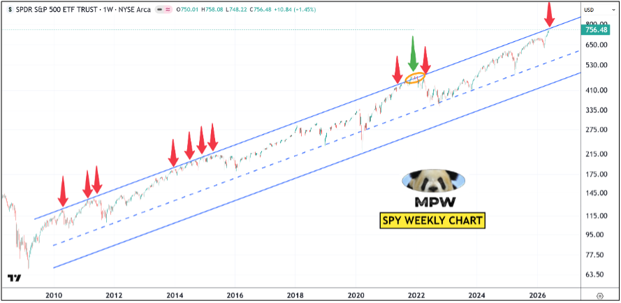
SPY 周线图，自 2009 年延伸至今的上行通道上轨即"牛市天花板"，历轮触顶（红箭头）均引发回落，当前价再度顶到通道上沿
它确实终结了这波多头攻势，在精准的位置上给出了一记响亮的拒绝。
那么，新的问题来了：它会跌到多低？在审视了自 2009 年以来的整轮涨势之后，我找到了三段可作为当前回调参照的案例：
第一段是 2024 年 7 月。
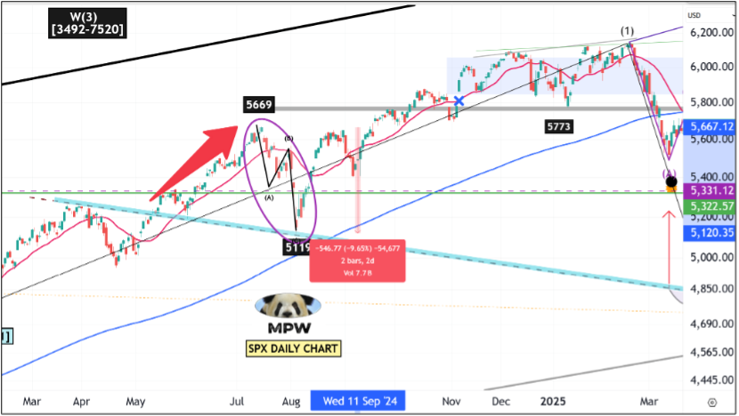
2024 年 7 月案例，标普日线 W（3）区间 [3492—7520]，自 5669 高点经 A-B-C 之字形回调至 5119
第二段是 2020 年 9 月，恰好在新冠崩盘及其后续反弹之后。
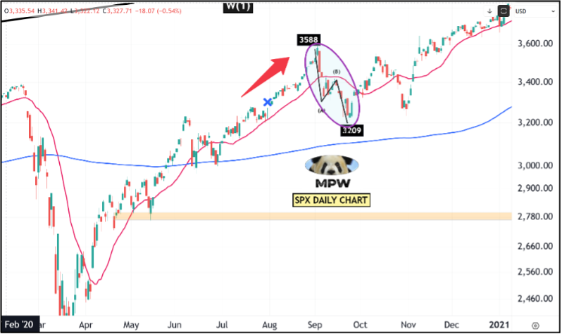
2020 年 9 月案例，标普日线自 3588 高点经 A-B-C 之字形回落至 3209
第三段是 2018 年 2 月，同样紧随又一轮直冲顶部的耀眼多头行情之后。
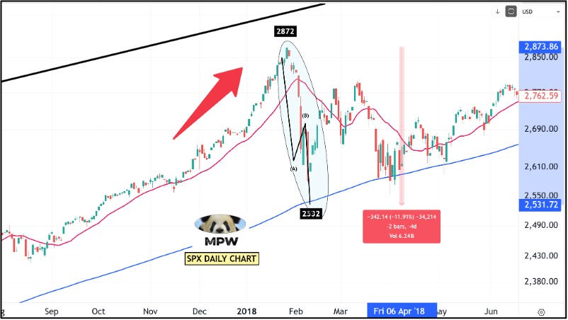
2018 年 2 月案例，标普日线自 2872 高点经 A-B-C 急跌至 2532
这三个抛物线顶，与当前的格局极为相似。让我们深入剖析。
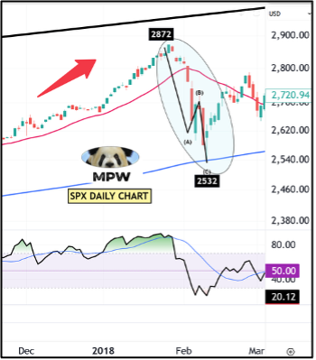
2018 年 2 月放大图（含 RSI 副图），自 2872 经 A-B-C 杀至 2532，底部 RSI 触及 20.12 区
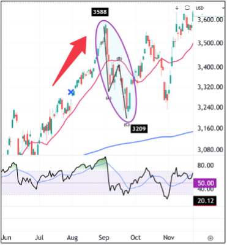
2020 年 9 月放大图（含 RSI 副图），自 3588 经 A-B-C 回落至 3209
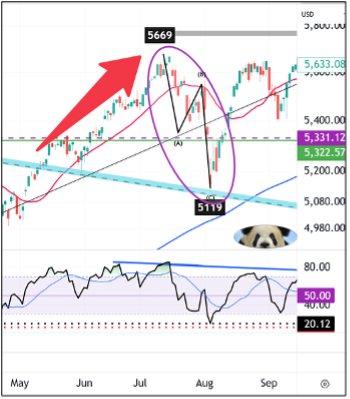
2024 年 7 月放大图（含 RSI 副图），自 5669 经 A-B-C 回撤至 5119
下面是这三次重大回调关键统计数据的对比表。
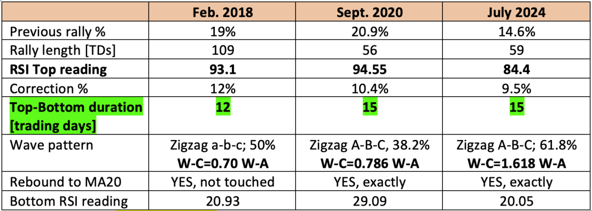
三次重大回调关键统计对比表（图表版），高亮"顶—底历时"分别为 12/15/15 个交易日
带着这三个"抛物线顶"先例，我们来核对当前的格局
本轮涨势已持续 44 个交易日，标普 500 累计上涨 20.5%。
最高点处的 RSI 读数为 86.61，极度超买。
参照前述三个案例：自顶部起第 15 个交易日为 6 月 25 日；而一次典型的 10% 回撤，将把标普 500 带至 6850 区域，恰好位于那处巨大跳空缺口的上沿。
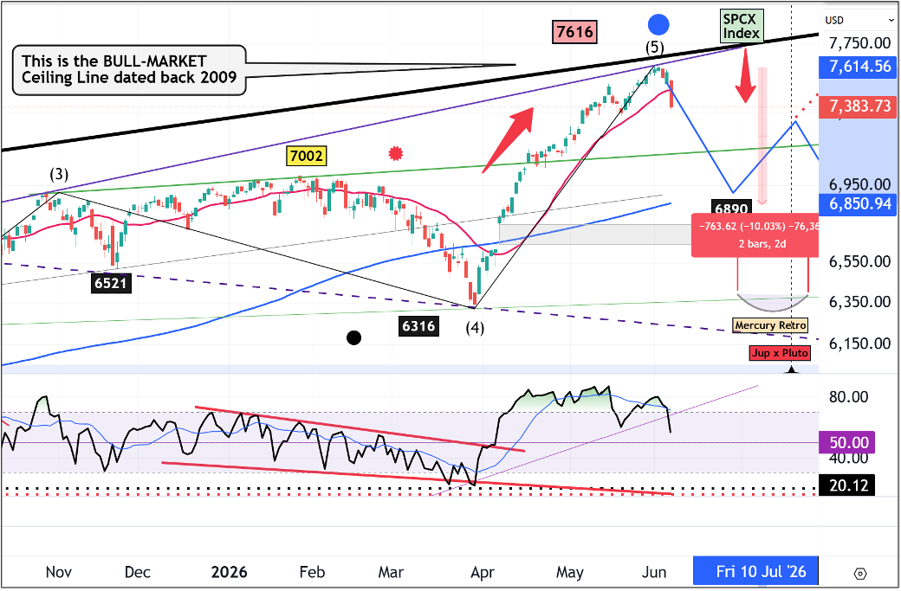
如果我是你，我会把这几个数字写进日历：6 月 25 日—26 日，标普 500=6850。
哦对，我差点忘了提醒你：6 月 29 日是今年水星逆行的起点——若你关注我足够久，便会知晓这一时间窗在标记重大转折点上的神秘力量。我会盯紧那个日期，以捕捉一个重大底部。
再附赠我的 10 分钟交易图：
周五的暴跌属于 W-3 的一部分，它还需要后续的 W-4 与 W-5 来回补下方的缺口——即那条蓝色带状区域。
随后，SPCX（SpaceX 指数）将重新点燃"多头动能"，试图解救被套的多头，但它将以惨败告终——伴随下周三 FOMC 会议后新任美联储主席那番盲目乐观的警示。
我会减持手中的 7/17（7 月 17 日到期）看跌期权（puts）——它们将在下周一变为价内（ITM），并于下周中重新建仓，以把握那一段巨大的 W-C 浪。
当然，下面这张路线图属于相对保守的形态，并未纳入潜在的"黑色星期一"情形。若真如此，标普 500 将迅速崩跌至 7200 点下方，与 2018 年 2 月如出一辙。
你们中有人或许已注意到，我标注的反弹高点——即沃什头像所在处【7450】——不仅是本轮跌幅的 50% 位置，同时也是日线 20 日均线（MA20）的所在。在此前三个案例中，市场都曾转身再度亲吻 MA20 一次，而后才迎来最终的崩跌。
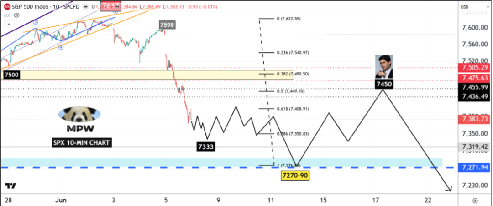
标普 10 分钟交易图，以斐波那契回撤标注 7270—90 见底后反抽至 7450（沃什头像处，对应 50% 与 MA20），随后再度转跌
《波段市场研究报告》仅供具备独立决策能力的专业投资者进行学术与市场交流。文中所有推演与数据绝不构成任何买卖建议或"交易信号"。受监管限制，我们不提供具体操作推荐。初级投资者切勿在此寻找短期交易捷径，所有投资必须基于独立判断，风险自担。